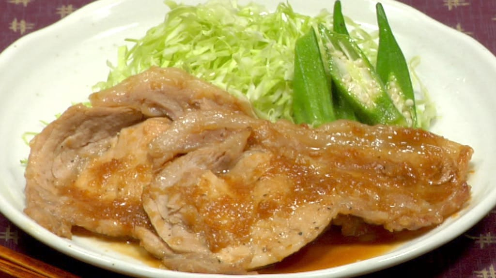

Buta Shogayaki

Description
We are making Japanese salarymen’s one of the most popular dishes, Pork Shogayaki also known as ginger pork!
The ginger sauce spices up your appetite, and this is the perfect recipe for hot summer days.
Ingredients
- 4 Pork Loin Slices
- 1 tbsp Soy Sauce
- 1 tbsp Sake
- 1 tbsp Mirin
- 1/2 Sugar
- 1/2 Grated Ginger Root
- 1/2 Garlic
Steps
- Let’s prepare the side vegetables.
Remove the stem ends of the pre-washed okras.
Peel off the firm skins around the stem ends.
- Rub the salt into the okras to remove the fuzz
- Immerse the okras in boiling water while they are still covered with salt.
- Cook for about 10 seconds, remove and place them on a mesh strainer.
Use a paper fan to help the okras cool down faster.
- Remove the stalk from the cabbage leaf. Cut the cabbage leaf into 8 cm (3.1") pieces.
- Pile them up and shred the cabbage. Serve the shredded cabbage on the plate.
- etcetera...